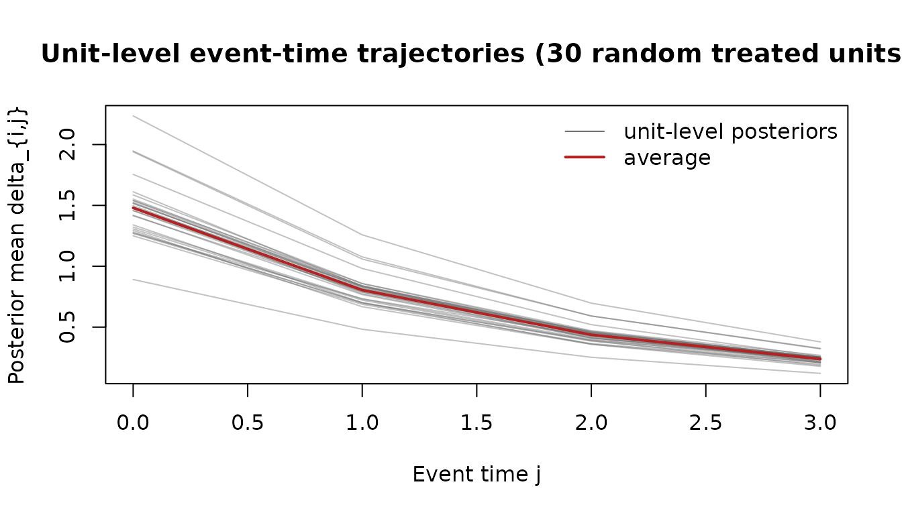
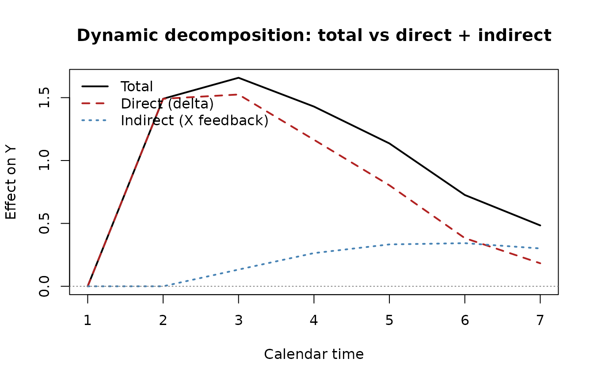

Illustrative TV-HTE event study (with feedback decomposition)
Source:vignettes/illustrative.Rmd
illustrative.RmdThis vignette uses a synthetic panel to show the tvhte
workflow. The panel has persistent outcomes, heterogeneous dynamic
responses, staggered adoption, and a covariate that responds to past
outcomes. We fit the structural TV-HTE model from Botosaru and Liu
(2025), then the homogeneous-feedback model from Botosaru and Liu
(2026), and use the two fitted objects to separate direct and indirect
dynamic responses.
The DGP here is synthetic only because the BL 2025
county-unemployment analysis (their Section 6) does not ship replication
data. The workflow on real panel data is identical: swap the simulated
Y, Y0, X, X0,
t0 for your own panel arranged the same way.
Setup and DGP
library(tvhte)
set.seed(11)
# Mixed cohort: half treated at t = 3, a quarter at t = 5, a quarter never.
N <- 1500; T <- 7
cohorts <- sample(c(3, 5, Inf), N, replace = TRUE, prob = c(0.5, 0.25, 0.25))
sim <- simulate_tvhte(
N = N, T = T, t0 = cohorts, J = 3,
rho_Y = 0.45, # persistent outcome
rho_delta = 0.55, # treatment effect decays with event time
sigma_U = 1, sigma_eps = 0.3,
mu_alpha = 0, mu_delta0 = 1.5, # average DATT at impact = 1.5
sigma_alpha = 0.6, sigma_delta0 = 0.5, # heterogeneity in both
cor_alpha_delta = 0.3,
beta = 0.4,
feedback_gamma = c(intercept = 0.1, gamma_Y = 0.25,
gamma_X = 0.4, sigma_eta = 0.3),
seed = 11
)
str(sim, max.level = 1)
#> List of 9
#> $ Y : num [1:1500, 1:7] -1.13 1.688 0.535 1.409 0.081 ...
#> $ Y0 : num [1:1500] -0.988 -0.272 0.525 0.371 0.689 ...
#> $ X : num [1:1500, 1:7, 1] -0.861 -0.735 1.443 -0.617 0.74 ...
#> $ X0 : num [1:1500] -1.613 -2.34 2.151 -1.091 0.203 ...
#> $ t0 : num [1:1500] 3 3 Inf 3 3 ...
#> $ J : num 3
#> $ lambda: num [1:1500, 1:2] -0.355 0.016 -0.91 -0.818 0.707 ...
#> $ delta : num [1:1500, 1:4] 1.571 0.988 2.142 1.116 2.218 ...
#> $ params:List of 11The simulated panel has N = 1500 units observed at
t = 0, 1, ..., 7. Three cohorts (treated at 3, treated at
5, never treated) are mixed in known proportions. The covariate
X_{it} adjusts each period in response to lagged
Y and lagged X — the homogeneous-feedback DGP
of BL 2026.
Fit the structural model
fit <- tvhte(
Y = sim$Y,
Y0 = sim$Y0,
t0 = sim$t0,
J = sim$J,
X = sim$X,
compute_se = TRUE
)
print(fit)
#> Time-Varying Heterogeneous Treatment Effects (Botosaru-Liu 2025)
#> N = 1500 units; T = 7 periods; staggered (3 cohorts: 3:n=750, 5:n=381, Inf:n=369); J = 3
#> log-likelihood = -16054.263 convergence = 0
#>
#> Common parameters (theta):
#> rho_Y = 0.4769 (SE 0.01485)
#> rho_delta = 0.5434 (SE 0.01977)
#> sigma_U = 1.003
#> sigma_eps = 0.1411
#> Prior on lambda_i = (alpha, delta_0):
#> mu = (0.0125, 1.476)
#> sd = (0.5972, 0.493), cor = 0.2837
#>
#> Covariate coefficients (beta):
#> beta[1] = 0.3538 (SE 0.02851)
#>
#> Mean posterior event-time effects (across units):
#> delta_0 = 1.4757 delta_1 = 0.8021 delta_2 = 0.4357 delta_3 = 0.2371The QMLE recovers the dynamic parameters cleanly: rho_Y,
rho_delta, the covariate coefficient beta, and
the prior moments of the correlated random coefficients
(alpha_i, delta_{i0}). The “mean posterior event-time
effects” line shows the average across units of the unit-level
empirical-Bayes trajectories — this is what an event- study plot would
show aggregated across units.
Unit-level posterior trajectories
The empirical-Bayes step gives a per-unit
(alpha_hat, delta0_hat) plus the full event-time path
delta_{i,j} for j = 0..J.
library(graphics)
# Show 30 randomly-chosen treated units' posterior trajectories
treated_idx <- which(is.finite(sim$t0))
sub <- sample(treated_idx, 30)
matplot(0:fit$J, t(fit$delta_path[sub, ]),
type = "l", col = adjustcolor("grey40", 0.4), lty = 1,
xlab = "Event time j",
ylab = "Posterior mean delta_{i,j}",
main = "Unit-level event-time trajectories (30 random treated units)")
# Overlay the cross-unit mean
lines(0:fit$J, colMeans(fit$delta_path[treated_idx, ]),
lwd = 2, col = "firebrick")
legend("topright", legend = c("unit-level posteriors", "average"),
col = c("grey40", "firebrick"), lty = 1, lwd = c(1, 2), bty = "n")
The trajectories fan out because the random coefficient
delta_{i0} varies across units. The average path (red)
decays at roughly the estimated rho_delta.
Fit the feedback model
fb <- fit_feedback(sim$Y, sim$Y0, sim$X, sim$X0)
print(fb)
#> Homogeneous covariate-feedback process (Botosaru-Liu 2026)
#> X_it = 0.09722 + 0.2519 * Y_{i,t-1} + 0.3986 * X_{i,t-1} + eta_it
#> sigma_eta = 0.3008The covariate X_{it} is modelled as an AR(1) with one
lag of Y — the simplest “homogeneous feedback”
specification. Coefficients should sit near the true
c(0.1, 0.25, 0.4).
Under the BL 2026 factorisation, the structural piece (fit by
tvhte()) and the feedback piece (fit by
fit_feedback()) are estimated separately — neither needs a
parametric specification of the other.
Counterfactual decomposition
simulate_counterfactual() implements BL 2026’s Algorithm
1: it draws latent types from the estimated prior, evolves event-time
effects via the AR(1), and propagates (Y, X) jointly using
the estimated feedback process. The output is a joint counterfactual
path (Y_i^{T,*}, X_i^{T,*}), separating the
direct effect (through delta_{i,j}) from
the indirect effect (through
X_t * beta).
# Counterfactual 1: same units, treatment shifted earlier (t0 = 2)
cf_early <- simulate_counterfactual(fit, fb, t0_star = 2,
N_star = 500, seed = 99)
# Counterfactual 2: same units, never treated
cf_never <- simulate_counterfactual(fit, fb, t0_star = Inf,
N_star = 500, seed = 99)
# Difference at each calendar period gives the total dynamic response.
total_effect <- colMeans(cf_early$Y) - colMeans(cf_never$Y)
# Direct-only counterfactual: same treatment but freeze X at its baseline
# value (no feedback adjustment). We re-build by setting feedback gammas
# that ignore Y_lag and X_lag (so X stays at its intercept + noise).
fb_frozen <- fb
fb_frozen$coef["gamma_Y"] <- 0
fb_frozen$coef["gamma_X"] <- 0
cf_early_direct <- simulate_counterfactual(fit, fb_frozen, t0_star = 2,
N_star = 500, seed = 99)
cf_never_direct <- simulate_counterfactual(fit, fb_frozen, t0_star = Inf,
N_star = 500, seed = 99)
direct_effect <- colMeans(cf_early_direct$Y) - colMeans(cf_never_direct$Y)
indirect_effect <- total_effect - direct_effect
decomp <- data.frame(
t = 1:T,
total = round(total_effect, 3),
direct = round(direct_effect, 3),
indirect = round(indirect_effect, 3)
)
print(decomp)
#> t total direct indirect
#> 1 1 0.000 0.000 0.000
#> 2 2 1.491 1.491 0.000
#> 3 3 1.658 1.525 0.133
#> 4 4 1.429 1.165 0.264
#> 5 5 1.136 0.803 0.333
#> 6 6 0.726 0.383 0.343
#> 7 7 0.484 0.183 0.301
matplot(decomp$t, decomp[, -1],
type = "l", lty = c(1, 2, 3), col = c("black", "firebrick", "steelblue"),
lwd = 2, xlab = "Calendar time", ylab = "Effect on Y",
main = "Dynamic decomposition: total vs direct + indirect")
abline(h = 0, lty = 3, col = "grey50")
legend("topleft", legend = c("Total", "Direct (delta)", "Indirect (X feedback)"),
lty = c(1, 2, 3), col = c("black", "firebrick", "steelblue"),
lwd = 2, bty = "n")
The total dynamic response (black) is the sum of the direct structural effect (red dashed — what the unit would experience holding the covariate path fixed) and the indirect adjustment effect (blue dotted — how much of the response is mediated by the covariate responding to past outcomes and treatment). In the BL 2026 minimum-wage example, the direct effect is the wage response holding firm input demand fixed; the indirect effect is the additional response that flows through firms re-optimising hours and employment composition.
On real data
For an applied dataset, the workflow is the same:
- Arrange your panel as
(N x T)outcome matrixY, baseline vectorY0, optional(N x T x K)covariate arrayX, baselineX0, and length-Ntreatment-cohort vectort0(useInffor never-treated units). - Call
tvhte(Y, Y0, t0, J, X)for the structural fit. - Call
fit_feedback(Y, Y0, X, X0)for the feedback fit. - Counterfactual decomposition with
simulate_counterfactual().
The QMLE step under the Gaussian working prior is consistent for the
common parameters even when the true prior on
(alpha_i, delta_{i0}) is non-Gaussian (Botosaru and Liu
2025); the empirical-Bayes step achieves ratio optimality. The
homogeneous-feedback factorisation delivers separately-identified direct
and indirect effects (Botosaru and Liu 2026).
References
- Botosaru, Irene and Laura Liu (2025). “Time-Varying Heterogeneous Treatment Effects in Event Studies.” arXiv:2509.13698.
- Botosaru, Irene and Laura Liu (2026). “Event Studies with Feedback.” AEA Papers and Proceedings 116: 70–74.